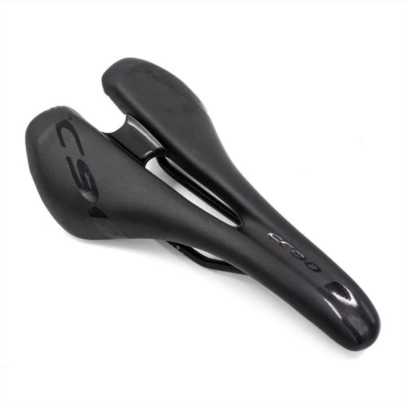

A bicycle saddle, sometimes correctly called a bicycle seat, is one of five contact points on an upright bicycle, the others being the two pedals and the two handles on the handlebars. The bicycle saddle has been known as such since the bicycle evolved from the draisine, a forerunner of the bicycle.